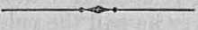
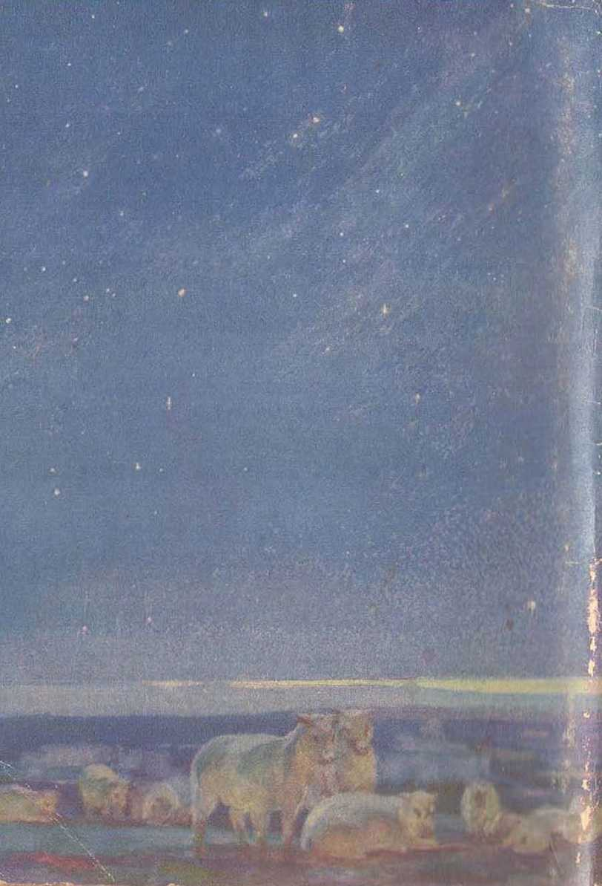

explained in
Seven Bible Treatises
by
J. F. RUTHERFORD
Page
3 Jehovah
10 Satan
20 Who are God's witnesses
29 His Name
38 King of Eternity
4fi The Unselfish >
55 Know Jehovah
is God
•>--<■
More than one hundred twenty million copies of Judge Rutherford’s writings are now in circulation.
•>----<•
CorynionTEP 1032
AND I’UIII.INIIED UY
W A T C II T 0 W IC R
BIBLE AND TRACT HOC ICTY
Intermit ionn I Bible Studenth AsHoelntlon Brooklyn, N. Y., U.S.A.
Biianctt Offices: London, Miigdoburg, Paris, Toronto, Strnthfield, Cape Town, Benin, Copenhagen, Stockholm, mid other cities.
Mada in U.S.A.
JEHOVAH, the Almighty God, the Most High, is the Maker of all things good. He is from everlasting to everlasting, and there is none other. He covers himself with light for his garment, and all light proceeds from him. He created the heavens and stretched them out like a curtain and filled them with his reflected glory. He laid the chief corner stone and foundations of the earth and built it according to his sovereign will. In its youth he made the cloud for its garment of covering and the thick darkness for its swaddling-cloth. He set the sun in the heavens for the light of the earth by day, and the moon and the myriad of stars for its light by night. He even numbered the stars and gave each one a name. With him everything is order and there is no confusion. He causes the stars and the planets to take their respective, places and move continuously in their assigned orbits. He has made the mountains to lift their heads high above the sea, and has commanded the eagle to mount up above the rocky crag and to make her nest in the strong places. He has clothed the earth in verdure and filled the great forests with beasts and fowls of the air.
He created man in perfection and made him the prince of the earth. The eternal destiny of all creation he holds in his mighty hand. The depth of the riches of his wisdom and knowledge, and the height of his power and love, are too great for the comprehension of man. The Almighty One, however, condescends to invite man to come and reason with him and to learn of his way. To know and to obey God means to have life everlasting in peace and happiness. Where, then, should man expect to find knowledge and wisdom, except in the revelation of the Almighty God? His Word is a fountain of knowledge and wisdom, ever flowing to supply refreshment and life Io I hose who drink therefrom. He is the Emintnin of life everlasting.
Jehovah God is I he origin and source of all true prophecy. In proof of this statement it is written, in Isaiah -11:6,7, /I.A’.F.; '‘Thus saith Jehovah, the King of Israel, and his Redeemer, Jehovah of hosts: I am the first, and 1 am the last; and besides me there is no God. And who, as I, shall call, and shall declare it, and set it in order for me, since I established the ancient people? and the things that arc coming, and that shall come to pass, declare unto them.”— M.argi n.
The great Creator has revealed himself to his creatures by several names, each one of which is deeply significant. By his name JEHOVAH is meant his purposes toward his creatures, His name GOD denotes that he is the Creator of everything that is good. His name ALMIGHTY signifies that his power is without limitation and that nothing can successfully resist him. His name MOST HIGH means that he is supreme and above all.
Why is there such gross ignorance concerning God and his goodness toward men? The correct answer is, that long centuries ago Satan, the enemy of God, turned man into the paths of mi righteousness and rebellion and since then has blinded men to the truth. In doing this Satan has employed divers agencies, many of which have claimed to represent God, but who in fact have misrepresented him. Practicing hypocrisy these mon have been used by Satan to turn the people away from Jehovah and into darkness. God could have prevented this, to be sure, but his wisdom led him to permit the enemy to do his worst, that God might in his due time prove to all intelligent creation that he is supreme and that those who would have life must obey him and walk in the way of righteousness.
The greatest truth that all men must learn is that of and concerning the kingdom of God. That kingdom will completely vindicate God’s word and his name, and it will bring paradise and endless joy to the people. ■
There is no government on earth that is satisfying to honest men. There never was a government that was satisfactory to honest men. The reason is that there is so much dishonesty practiced amongst men; and all people are afflicted with disease, sickness and death. That unhappy condition began more than sixty centuries ago, when perfect man was in Eden. The rebellion of Sal an led to the downfall of man and brought death upon all human creation. In that hour of distress God gave his word of promise that. Mho seed of the woman shall bruise 1lic head of him who brought death upon mankind'. The “woman” there mentioned symbolically pictured God’s universal organization of righteousness. The promised “seed” is the offspring of that woman or universal organization of God, and corifltihilos his kingdom. At the beginning God put his kingdom to the fore as the most important of all truths.
Years thereafter God gave Abraham and his wife the promise that by their seed all the families of the earth shall be blessed. God used them to make a prophetic picture. Abraham was a picture of God himself, while his wife Sarah pictured the universal organization of Jehovah God. The promise Ilion made further disclosed that the “seed" that would bring blessings to the nations of the earth would be produced by and through a long period of testing and suffering and, when brought forth to completeness, shall constitute the kingdom of God.
To meet his requirements Jehovah has liept this seed shrouded in mystery for many centuries. Gradually he has unfolded this mystery to his prophets and faithful servants. He gave his word of promise that the mystery should he completely solved and understood at the end of the world, otherwise known as “the last days”.
That time has now arrived. We. are at the end of the world and in the last days. That does not mean the end of the earth, because the earth abides forever. It does not mean the end of time, because time shall never end. It means the end of the long dark period of time in which wickedness has predominated. It means the lifting of the veil of darkness and ignorance from the people to the end that the great light of God’s loving-kindness may shine into the mind of every man. That time is first marked by a great amount of trouble and suffering culminating in the greatest tribulation that the earth has ever known. That trouble will be brief and will be the last, and it will usher in the rule of righteousness on earth. That rule of righteousness will bring the desire of every honest heart. As it progresses the earth will be filled with a happy and joyful race of people who will give honor and glory to the Most High God. To gain a knowledge of the kingdom of God is therefore of greatest importance to all people.
These precious and satisfying truths are set forth in th$ Bible, which is the Word of God.
The study of the Bible is the most profound in which man can engage. Its understanding is to be preferred far above all the gold and silver the world can produce. It enlightens the mind, makes glad the heart, and gives much strength to the man.
It has been claimed that the understanding of the Bible is limited to a few men called "the clergy”. That claim is not the truth. The Bible is given for Ilie understanding, aid and comfort of all who love righteousness and who earnestly seek to know and to do God’s will. It is the Word of God. In Psalm 25:14 it is written: "The secret of the Lord is with them that fear him; and ho will shew them his covenant.”
Fear of the Lord God does not mean a morbid dread of impending disaster. A godly fear is awe and veneration of the creature for the Creator. It is man’s proper appreciation of the majesty and loving-kindness of the Most High, and man’s being deeply apprehensive lest he should transgress God’s righteous and unchangeable laws. The fear of man loads one into a snare. The fear of God is the beginning of wisdom and leads one in the way of life. In order for man to obtain life everlasting it is necessary for him to be brought to a knowledge of the truth. The truth of primary importance is that concerning Jehovah God. It is written in the Scriptures that This is life, eternal, to know thee the only true God, and Jesus Christ, whom thou hast sent’.—John 17: 3.
Jehovah God has not pushed his name to the fore. At stated intervals he has brought his name prominently before his creation. This he has done by a demonstration of his unlimited power, which has always proved that the Devil is powerless against Jehovah when the latter deems it proper to exercise his great power against the wicked one. At these stated intervals God has brought his name before his creation, not for a selfish reason, but for the benefit of his creatures. Unselfishness has been his motive. This is another proof that “God is love”.
During the ages God has magnified his word of promise above his name. The time has come, however, when Jehovah’s name and word shall be exalted among his creatures. Then all creatures will know that the word of God is always true and that his name is above all and worthy to be praised.
God’s word of promise is perfect. It is his expressed will. In the ages he has moved majestically forward in carrying out his will as expressed in his Word. At stated intervals, to save the people from complete infidelity, he has brought his name prominently before them. Now the ‘seed of promise’ is about completed and the time is at hand when the Lord will magnify his holy name before mankind. The issue will then be finally determined against Satan in favor of Jehovah. He will have a witness given in the earth of his purpose, and this witness must be given now. Who will profit by the testimony given?
The meek are those that arc teachable. The wise man is he who desires to be taught the truth and to be guided by the truth. It is written, in Psalm 25:9: f‘The meek will he guide, in judgment, and the. meek will lie teach his way.” It is furthermore written: “The mook shall inherit the earth, and shall delight themselves in the abundance of peace.” The student soon finds that the Bible is a groat storehouse of knowledge and wisdom, because it tolls of Jehovah God. A knowledge of the Bible is now within I he roach of all. Learn its contents and be greatly blessed. "Where do we get our Bible?” many ask. That question will be answered in another address.
JEHOVAH GOD did not create Satan. Tic did create Lucifer, and because of Lucifer’s rebellion and extreme wickedness God gave him four names, to wit: Satan, which means oppose! of righteousness; Devil, which means slanderer of all who do right; Dragon, winch means the one that devours the good; and Serpent, which means the great deceiver. The history of that wicked one is briefly this:
When God made the earth as the habitation for his creature rnan lie assembled his heaven ly creatures before him. Among the ones present were the Logos and Lucifer, which two were designated “the morning stars”. Doubtless God disclosed to these mighty creatures tlins assembled his purpose to create man and put him on earth and to give him dominion over his other creation of earth. That information called forth a song of praise to Jehovah. The Bible record is that these two “morning stars” sang together and all the hosts of God shouted for joy.
When God created man and placed him in the paradise of Eden he made man a part of Lucifer’s organization. God appointed Lucifer as man’s overseer or overlord. Lucifer must have . been a very beautiful as well as powerful creature. God by his prophet Ezekiel, in the twentyeighth chapter, gives a description of Lucifer in these, words: “Thou hast been in Edon, the garden of God; every precious stone was thy covering. . . . Thou art the anointed cherub that covereth; and T have set thee so ; thou wast, upon the holy mountain of God; tliou hast walked up and down in the midst of the stones of fire. Thou wast perfect in thy ways from the day that thou wast created, till iniquity was found in thee. . . . Thine heart was lifted up because of thy beauty; thou hast corrupted thy wisdom by reason of thy brightness.” This proves that Lucifer was a high official in the great organization of God and was an overseer of one part of God’s universal organization. “Iniquity” means lawlessness; and this scripture shows that Lucifer became lawless, or rebelled against God's law.
The perfect man was in Eden, and Lucifer was there. Man being a part of his organization and under his lordship, the duty devolved upon Lucifer to safeguard man’s interest and aid him Io obey rather than to disobey God. Lucifer knew that God had delegated to man the power to produce a race of people that in time would till the earth, and that all this creation would worship Jehovah God. By his prophet Isaiah, in the fourteenth chapter, Jehovah says: “O Lucifer, son of the morning! . . . Thou hast said in thine heart, I will ascend into heaven, I will exalt my throne above the stars of God; I will sit also upon the mount of the congregation, in the sides of the north: I will ascend above the heights of the clouds; I will be like the Most High.”
This is proof of Lucifer’s ambition to possess that which God had not given him and to have the worship of creatures, and that he determined to have it for himself. He set about to carry out his ambitious desire, and in doing so he resorted to lying, fraud and murder, and, above all, he was guilty of treason and rebel lion against God. His first move was to alienate man from God, and this he began to do by his subtle influence over Eve.
He. knew that God had said to mail that 'if you eat of this forbidden fruit you shall surely die’. Being reminded of this statement by Eve, he replied to her: *You shall not surely die; for God doth know that in the day you eat of that fruit you shall be as wise as gods.’
His argument was like this: 'If man eats of that fruit in violation of God’s law and God does lull him, that will prove that God’s creature is imperfect, and hence God’s word unreliable, and that he cannot make a man that will maintain his integrity, and therefore God could not afford to kill man. On the other hand, if man sinned and God did not kill him, that would prove God a liar, because he said that he would kill him, and therefore none of his creatures would believe him.’ Lucifer thus reasoned that in any event he would be able to turn the major portion of creation away from God and these he would have for himself and for his own worship. Eve fell under the false reasoning and broke God’s law. When Adam learned that Eve had violated the law and. still lived he readily and willingly joined in the rebellion against God.
Because of this rebellion God sentenced man to death and expelled him from Eden. He also announced his purpose that in due time he would destroy Lucifer, whom he now named Satan, the Devil. From that time until now Satan has been the violent opposer of God, and man’s worst enemy.
God could have killed Satan immediately, of course. He could have lulled man immediately and started another race. His wisdom directed that he take the course he did take. Satan denied that Jehovah Clod is supreme and that his word is true. Had God killed Satan at once, that would have proven that the power of God is supremo, but the opportunity to prove the truthfulness of God's word would have been absent. At the time of the tragedy in Eden God gave his word that he would bring forth a "seed” which would destroy Satan and that the “seed” would he taken from amongst men. Satan knew that God would not select anyone who would be unfaithful to him, and knowing that all men on earth are imperfect he defied God to find a man that would prove faithful to God under the most severe test. Time was therefore required to demonstrate the truthfulness of God’s word.
If the issue should be decided in Satan’s favor, then all creation would turn against God. Should the issue be decided on God’s side that would prove to all creation that God is supreme, his word is true, that Satan is a liar, and that life and blessings must come from God alone.
In due time the issue will ho decided in favor of Jehovah. But until that time God will permit Satan to put forth every possible effort to sustain his own contention.
Early in the history of man Satan began to organize, men into forms of government, that he might more fully control them. To accomplish that purpose he exercised his power over men and induced them to form an organization with Nimrod as the leader of the people. Nimrod was a tool of Satan, and his organization belonged to Satan. That organization was called “Babylon'’, which from Satan’s viewpoint meant the "gate to god”. Evidently his purpose was to induce the people to believe that the way to their god (Satan) was by and through this organization of which Nimrod was the visible head. From God’s viewpoint the name "Babylon” meant ‘confusion’, because after the building of the tower of Babel God demonstrated his power to the people by confusing their language. That is the reason there are so many different languages spoken amongst men.
Satan’s fixed policy is to employ fraud, deceit and lying to accomplish his purpose of bringing reproach upon God and to thereby turn the people away from God. For I his reason, in his organization there are three elements or governing factors, to wit, the religious, the political, and the commercial. In Babylon the religious element was in control, and the people

Satan makes Nimrod king Page 15
were dominated by a false religion. Since then Satan has organized other world powers, and in all of them these throe elements appear. The political element of the governments makes and enforces the laws. The commercial element controls the business or commerce; and the religious element of the organization lends a sanctimonious air thereto and claims that the entire organization exists and operates by divine power. This is Satan’s chief method of practicing fraud upon the people. By his deceptive operations Satan blinds the people to the truth. For this reason it is written in the Scriptures, in 2 Corinthians 4:3, 4, that Satan, the god of this world, blinds the minds of men, lest the light of truth should appear unto them.
It is well known that from time immemorial all religious organizations have had some particular man who appeared as leader and to whom great honor has been given. After his death the memory of that man is revered, and often worshiped. This is another subtle moans of Satan to turn the people away from God and cause mankind to forsake the Creator by worshiping the creature. Throughout all these centuries God has had a few men on earth who have held fast their integrity and faithfully served him. By nature these men have been no better than other men, but they have had faith in God’s Word and have refused to yield to the deceptions of Satan. Their faithfulness and devotion to God has brought to them Jehovah’s approval.
The "seed” God promised to raise up and through which his name shall be vindicated is The Christ. The faithful men who have followed in the footsteps of Jesus Christ shall be of that "seed” according to the promise that God gave, and will bo used for his purposes. During the past fifteen centuries Satan has fraudulently induced religious leaders to believe that their duty is to convert I he world and get men into their churches. Satan’s real purpose has been to turn the mind of the people away from God's kingdom. God has not been attempting to convert any part of the world, nor to get anyone into heaven. He has merely had his truth placed before men in order that those who prefer to stand firmly on his side may do so. In his due time he will have selected every one that will be of The Christ, and then God will put his kingdom in full control of earth’s affairs. Then, and not until then, will the world be converted.
The first great act of God’s kingdom under Christ that will be seen by the people will be the destruction of the wicked organization of this world which is under the control of Satan. There is an abundance of Scriptural proof as well as proof outside of the Scriptures that God’s kingdom is at hand and that within a short time Satan’s organization will be completely destroyed. Then all hindrances will be removed and the people will have a full and fair opportunity to know and to understand that Jehovah is the only true God, that his word is true, and I lint his name is worthy of praise.
"When God’s kingdom takes full sway, never again will Satan have, control of the people. All the wicked God will destroy. All the obedient ones of mankind God will fully restore to health and give them life everlasting in happiness. The work of Jehovah God will fully demonstrate. to all that he is supreme in power, perfect in wisdom, and exact in justice, and that he is the very embodiment of love or unselfishness.
Because we are today entering that great period of transition from the old to the new world, a knowledge of the truth is of vital importance to all. The people now need to study the Bible together with such helps as have been provided to understand it. Every one who will he free from the oppressive hand of the enemy must have a knowledge of the truth; and I he truth of the salvation of man is found only iu the Bible.
JEHOVAH is the only true and Almighty God.
This great truth should be firmly implanted in every mind. He is the source of all life. Every sane creature loves life better than anything else. If opportunity is offered you would choose life in preference to anything else. It is therefore of most vital importance to all that they know God, who alone can give life everlasting, and know of his purpose of giving such to those who do right.
Since God has declared in his Word that he will not finally judge any of his creatures until they first receive a knowledge of his purposes, it follows conclusively that the just and loving God has provided some means to have that knowledge promulgated to the people. It is to be expected that he would provide for certain ones to be his witnesses and that it would be the duty and privilege of such to bear or carry his message of truth to the people who will be willing to hear. The Scriptures abundantly support this conclusion. In Acts 15:14 it is written that God at first did visit the nations to take out from them a people for his name, and that people so taken out must be his witnesses. The period of time employed by Jehovah in the selection of such is from the time of
the ascension of Christ into heaven until his second coining and the setting up of his kingdom, at which latter time God has promised to make known to all creation his purposes.
Why should Jehovah God take out from amongst men a people, for his name? In brief the Scriptural answer is this: When the perfect man Adam was in Eden he willfully violated God’s law. Satan seized upon that opportunity to defame God’s name and he then declared that God is not supreme in power, his name is not worthy of praise, because he could not put men on the earth who would always be faithful and true to him, and that such proves God’s creation is not perfect. Satan asked for permission to prove his challenge, and God permitted him to try it. From then till now Satan has continued to defame God’s name and, in doing this, has led almost all people into blindness concerning the truth. Jehovah’s due time has now arrived when the issue or question concerning his word and his name must be finally determined. Therefore through his prophet Isaiah, chapter forty-three, God says: ‘‘Bring forth the blind people that have eyes, and the deaf [ones] that have ears.” The facts show that the time would come for the fulfilment of this prophecy. Although we are now in the time of the greatest moans of education, a most favorable time for gaining information, and although the nations of “Christendom” claim to represent God on earth and speak his Word, yet we are in a time of greatest ignorance concerning God’s name, his Word, and his purposes concerning the peoples of the earth. These conditions are exactly as God foretold they would he at the second coming of Christ. His coining is pictured as a great light appearing to his people.
Through his prophet Isaiah, Jehovah, referring to this time, says: 'Darkness shall cover the earth, and gross darkness the people; but the light of the Lord arises upon those who are devoted to him.’ In this land called “Christian”, in all the schools and colleges the evolution of man is taught, which is exactly contrary to the Word of God. The majority of the clergymen preach evolution and deny the purchasing value of Jesus’ blood as the redemptive price of man, and deny God’s purpose of restoring the people to human perfection under Christ’s reign. They boldly and arrogantly say that evolution is a more potent god than the God of the Bible. Others say: “Let us ally ourselves with the League of Nations as the savior of the w'orld”; therefore gross darkness concerning the truth is now upon the people. A great crisis has arisen, and God will cause his truth now to he declared. Jehovah therefore says by his prophet, in Isaiah 43:9: “Let all the nations be gathered together, and let the people be assembled: who among them can declare this, and shew us former filings? let them bring forth their wit-
WHO ARE GOD’S WITNESSES? 23 nesses, that they may be justified: or lot them hear, and say, It is truth.” The time lias now come when the. detainers of God’s mime :ire called upon to make proof of their false claims or else admit that they are wrong and acknowledge God’s Word of truth.
Whom should we expect that God would use to tell his message of truth to the people? Surely not those who deny the inspiration of his Word and who advance the theory of evolution contrary thereto. The Lord loaves no doubt as to whom he will use as his witnesses. He. says those fully devoted to himself and who exorcise faith in the shed blood of Christ Jesus and who boldly take their stand on the side of the Lord and serve him he will use as his witnesses. Therefore he says to them, We are. my witnesses, saith the Lord, and my servant whom I have chosen; that ye may know and believe mo, and understand that I am he; before mo there was no God formed, neither shall there be after mo,” —Isaiah 43:10.
The witnesses of God are therefore those who believe in the great ransom of Christ ns the only means of salvation, who have devoted themselves to God and completely separate themselves from the world, and who delight l<> be the servants of the Most High and to boar the reproaches that were east, upon hiui. This they are doing, and they are going from door to door with the message of God’s truth in
printed form and delivering it to the people at a nominal cost to enable the people to get an understanding of the truth.
And why must this testimony be given just at this time? The answer is that Jehovah never executes his purposes in secret, but gives due notice thereof. The Bible history shows that at stated times God has brought his name prominently before the people that they might not entirely forget him, and this he has done for their good. Some of these instances I cite. Under the supervision of Satan the peoples of earth were greatly debauched within a few centuries after the expulsion of man from Eden. Then God sent Noah to warn the people of his purpose to destroy this evil creation. After warning them through Noah God sent the great deluge upon the world and destroyed it. Jesus declared that the work of Noah prophetically foreshadowed a similar condition and a similar work would be upon the earth at the time of his second coming, where we now are.
God’s chosen people were in Egypt suffering under the lash of the cruel ruler of that land who defied Jehovah and reproached his name. The time came when God would have his people know of his supremacy. In the prophecy written by Moses God declares that he sent Moses and Aaron to Egypt as his witnesses to inform the ruler and the people of his purpose to bring a great calamity upon that nation. What Moses

Page 27
Jehovah's witness serves warning
and Aaron did at that time prophetically foreshadowed what shall he done at the end of the world and second coming of Christ.
Now fulfilled prophecy discloses God’s righteous organization and the mighty organization of Satan the Devil which is in opposition to God. The Scriptures clearly show that "organized Christianity”, so called, is a part of Satan’s organization. The physical facts fully confirm this. The Lord’s Word plainly announces his purpose to destroy Satan’s organization in the battle of Armageddon. It is to be expected that Jehovah would give due notice of that impending conflict. The Bible abundantly proves that the Lord will give such notice and is now doing so. The clergy have raised the issue on tire earth as to who is the Almighty God. The majority of them say the god of evolution is more potent than the God of the Bible. They boldly deny that God through Christ and his kingdom will raise up and restore health and life to the human race, but on the contrary claim that man by his own efforts can save and lift up himself. By reason of these false doctrines the youth of the schools have been made blind to the truth and their parents also were blinded. God's expressed purpose is to destroy that wicked organization, that all the people may see and learn die way that leads to everlasting life and may know that their blessings must come from Jehovah, the Most High. Thus Je-
WHO ARE GOD’S WITNESSES? 27 hovah expresses his love toward the blind people.
Before performing this great net Jehovah sends forth his witnesses to give testimony and to give warning to the people, Just as lie sent Noah, Moses and Aaron to warn the people in their time. Referring to the present time Jesus says that this gospel of the kingdom must be preached as a witness to all the nations before the final end and, when this witness work is done, then Armageddon shall fellow and it will be the worst and. the last trouble ever upon the earth and will complete!}' wreck Satan’s wicked organization. This testimony is now given for two reasons: (1) that notice might be served upon the rulers and the people that Jehovah is supreme and that his time has come to act; and (2) that all the people of good will who desire may take their stand on the side of the Lord and thus flee out of Satan’s organization which soon shall be completely destroyed. To he sure, Satan will oppose this message of truth, and hence he uses his representatives of "organized Christianity” to oppose and thus keep the people in his organization.
The testimony is given by witnesses, and the. Scripturesand the facts definitely locate the persons who are God’s witnesses. Jehovah committed unto Jesus Christ (he obligation of bearing witness to the peoples of earth. Jesus declared that his chief purpose in coining to the earth
was to do that very thing. In Revelation 12:17 it is written that the work of completing this testimony of Christ Jesus must be done by the remaining faithful Christians on the earth at the second coming of Christ. It is further stated there that Satan and his agents will do all within their power to prevent this witness and to destroy the witnesses. Only those who are authorized by Jehovah to act can act for him and in his name. Those thus appointed to do the witness work include Jesus Christ and all of his true and faithful followers, and none other. In proof of this it is written, in Isaiah 61:1, 2: “The spirit of the Lord God is upon me; because the Lord hath anointed me to preach good tidings unto the meek; he hath sent me to bind up the brokenhearted, to proclaim liberty to the captives, and the opening of the prison to them that are bound; to proclaim the acceptable year of the Lord, and the day of vengeance of our God; to comfort all that mourn." Therefore those on earth today who are really devoted to God must declare the day of his vengeance and tell the people of and concerning his kingdom. If all men on earth would refuse to give this testimony the Lord would make the very stones cry out his name.
The facts and the Scriptural proof show beyond all doubt that Christ is come and that the selection of his true followers is about done. It follows, therefore, that the last members of Christ on earth are properly described under the symbol of the “feet of him". 11’ you are priv -ileged to be a witness for the name of Jrhnvnh God and his kingdom, great is your privilege. Concerning all such it is written, in Isaiah 52: 7 : "How beautiful upon the mountains arc the feel, of him that hringeth good tidings, that pub-lisheth peace; that bringeth good tidings of good, that publisheth salvation; that saith unto Zion, Thy God reigneth!"
We are living in the most favorable time yet, because we stand at the portals of the Golden Age. The. gates of the kingdom are opening to receive those who are hungry for righteousness. Let the people turn themselves to God and his kingdom and be for ever blessed.
JEHOVAH’S NAME is of greatest importance to all intelligent creatures. All things are of secondary importance compared to his name. For the. benefit of man it is written in John 17:3: “This is life eternal, that they might know thee the only true God, and Jesus Christ, whom thou hast sent.” Without life man could enjoy nothing, and man cannot have life without knowing Jehovah God. Few men know Jehovah and the meaning of his name, because man’s greatest enemy and God’s chief opponent, Satan, uses his power to keep men in ignorance concerning Jehovah. In 1 Timothy, chapter two, it is written that it is the will of God that in his own due time every man shall be brought in contact with the truth and afforded an opportunity to know Jehovah. If man avails himself of this opportunity ho shall live and not die.
The name Jehovah means the purpose of the Creator toward his creatures. He has also revealed himself to man by the names God, the Almighty, and the Most High. His name God means that he is the Creator of heaven and earth. Almighty means that his power is absolute and without limitation, and his name Most High means that ho is supreme and above all. His name Jehovah makes known the reason why he created man, why he has not until now exercised his absolute power to deliver man from distress, and why and how in the very near future he will exercise his power against all wickedness and for the good of his creatures.
The importance of the name Jehovah cannot be overstated. It is the will of Jehovah that man shall know this great truth from this time forward. For this reason he has caused record to he kept which covers a period of more than six thousand years. That record we call the Bible or Scriptures, and God’s time has come, to re-
veal the meaning thereof to all who desire Io understand and who love righteousneHs.
When God made man a perfect creature and placed him in Eden he announced his purpose to be that man shall multiply and lill the earth with a perfect race and that man shall have dominion over the other creation of the earth. God commanded man to be obedient to him and live, and told man that disobedience would moan his death. Scripturally the overlord of man appointed by Jehovah was Lucifer, who is now called Satan. Satan rebelled against God, and man joined in that rebellion and for this justly suffered the penalty imposed for disloyalty. All of his offspring inherited that penalty of death, and for this reason death has been upon the human race. When Satan told man that he would not surely die, he put in dispute the word of Jehovah God. When Satan declared that God could not put a man on earth who would remain true and steadfastly faithful to him, he put in dispute or issue the name ami purpose of the Almighty One. If the great question or issue should be decided according to Satan's contention, that would prove that Jehovah God is not almighty and therefore not supreme; and hence no one could rely on him for everlasting life. The issue must be decided against Satan and for Jehovah God in order to demonstrate to all creation that Jehovah is the supremo God. That Satan might have every possible opportunity to prove his contention Jehovah gave him a long period, of time and has permitted him to go his limit in wickedness. It can never he said that Satan did not have full opportunity to prove his contention. The time must come when the issue must he finally settled. That time has approached. Satan’s downfall after full opportunity to prove his contention will show to all creation that no one can trust the opponent of Jehovah.
At Eden Jehovah God gave his word that in his own due time he would destroy Satan and his organization. Satan denied this and has continued to defy Jehovah. The removing of Satan and his organization will clear and completely uphold Jehovah’s word and name. That will be a vindication of Jehovah. The good resulting to mankind will he this: All will learn that Jehovah God is the Giver of life and that the only way the creature can enjoy everlasting life is by being obedient to Jehovah. The vindication of Jehovah’s name will be a triumph of truth and righteousness. In no other way is it possible to have everlasting peace, prosperity and happiness on the earth.
During all the centuries that Satan has been carrying on his wicked works Jehovah has kept his name before that part of the human race that has greatly desired to know and to do his will. From time to time he has prominently brought his name before all creation. Sixteen centuries following the expulsion from Eden nil the human race, except Noah and his fninily, had fallen away to the Devil. Jehovah used Noah to notify the people that his purpose was to destroy the race thou on the earth. The Devil and his followers scoffed at Noah. In due. lime God sent the great deluge and destroyed all the peoples of earth, only Noah and his family being saved from destruction. Jehovah did this for the purpose of putting his name before creation, and also to foreshadow what he would ultimately do with Satan and his entire organization.
Within a few centuries following the flood Noah’s descendants multiplied rapidly. In an attempt to turn all of the people away from Jehovah Satan set about to organize the people into a government with the Devil religion as the chief inducement or binder. He caused the building of the tower of Babel and the city of Babylon and instituted the worship of I he Devil and other creatures. Then that all men might not forget God to their own hurt, Jehovah confounded the speech of the people and scattered them throughout the earth.
Later Satan caused the building of the great military world power of Egypt in defiance of Jehovah. At the same time Jehovah God selected the descendants of faithful Abraham as and for his own people for a peculiar purpose. He permitted them to be domiciled in Egypt.
His declared purpose was to use the Israelites to foreshadow the outworking of his ultimate purpose of vindicating his name. Egypt under the invisible rule of Satan foreshadowed the entire world that lies under the control of the wicked one now, while Pharaoh foreshadowed the present visible rulers of the earth. The Israelites, being God’s people, foreshadowed those who trust in the Lord God at this time. The Egyptians greatly oppressed the people of God, and Jehovah destroyed the rulers and their army in the Red sea. It is written (2 Samuel 7: 23) that Jehovah did so for the express purpose of keeping his name before creation.
Later Jehovah established his chosen people at Jerusalem and the Jews became a great and mighty nation. The Jewish nation at Jerusalem foreshadowed the present-day “Christendom”, The Jews became unfaithful to Jehovah God. The Pharisees and their associates of the Jews constituted the clergy or religious leaders and advisers of the people of Jerusalem. Those clergymen became great hypocrites and turned the people away from God and to the Devil. Although those clergymen claimed to represent God they denounced his beloved Son Christ Jesus, who had been sent to teach them the truth. Therefore in plain phrase Jesus told the clergymen that they were the sons of the Devil because. they did the Devil’s will. Because of the unfaithfulness of the Jews in turning tn the Devil, and in order that Jehovah might I ■■ p his name before mankind, and in order ihiit he might foreshadow what lie would ultimately do toward Satan’s organization, and for the vindication. of his name, Jehovah caused Jerusalem to be completely destroyed.
Jerusalem was a type of "Christendom”, ns is plainly shown by many scriptures. AVhat is meant by the term "Christendom”? It is one word by which men attempt to describe. Christ’s kingdom on the earth. Long centuries ago Jehovah gave his word that he would in due time establish a kingdom of righteousness under Christ. Satan the Devil seized upon this declaration of Jehovah as a means of defrauding the people, and to this end he organized the fraudulent thing. He waited until professed followers of Christ Jesus had greatly increased in number; then he used selfish men fo make the so-called "church” organization a political organization. By that is meant that scheming politicians and greedy money-makers became the chief pillars in the professed Christian church. For many centuries the chief religion of the leading nations of the world was called Catholic. Then the Protestants were organized, and to this day they continue to operate. The rulers today in the leading nations of the earth claim to he Catholic or Protestant, and in both organizations the politicians or states-
men, and the financial strong men, are the chief pillars and supporters. These nations call themselves "Christian” to distinguish themselves from other nations called "'heathen”. The. Catholic and Protestant clergy are the spiritual advisers of the rulers of the nations, and the clergy themselves form a part of the ruling power. The clergy give advice concerning the political affairs of the land and openly participate in political and military matters. They are also the chief ones who oppose Jehovah’s witnesses and who cause these to be arrested and persecuted. t
I am recounting these well known facts in order to show what these things have to do with the vindication of the name of Jehovah God.
Jehovah God never takes any advantage of his enemy. He always causes his opponents to be first notified of his purpose. He caused Noah to notify the world of the impending flood. He sent Moses and Aaron to warn Egypt; and the Egyptian ruler defied Jehovah and said: "Who is Jehovah, that I should hear him?” Before the fall of Jerusalem Jehovah sent his witnesses to the Jews to notify them of his purpose to destroy the city. He caused his prophets Ezekiel, Jeremiah, Isaiah and others to give such warning. The clergymen of Israel and their political and financial allies scoffed at such notice of warning and used their combined powers to keep the people in ignorance of the truth.
Jerusalem was completely destroyed, even ns God’s prophets had foretold. The people should learn from God’s manner of dealing with mon and nations that when he declares his purpose to do a thing lie will do it, and nothing can prevent it. If the people are kepi, in ignorance of the truth, they cannot learn. The people must have an opportunity to hear the truth, and Jehovah God will see that they do have this opportunity regardless of all opposers.
Modern "Christendom” stands exactly in the same position in which ancient Jerusalem stood. Modern Jerusalem, or "Christendom”, has been and is unfaithful and untrue to Jehovah God. She has fallen under the influence of the wily Satan. Jehovah’s purpose as announced in his Word is to destroy "Christendom” within a very short time from now.
Jehovah will destroy "Christendom” because it has become the chief instrument in the. hands of the enemy to defame his name. Jehovah now sends his witnesses to your doors with his message of warning in printed form that you may have notice and may prove to yourselves whel.h-er or not these tilings are true. God’s I ruth alone will bring to you freedom and peace. Jehovah will make it known to all that he is the Supreme One and that his name stands for his purposes, which arc wholly righteous.
ETERNITY means that which is from everlasting to everlasting. A king possessing all power is an absolute monarch. Jehovah God is that King. His power is without limitation. Of him it is written, in Jeremiah 10:10 (margin) : “But [Jehovah] is the true God, he is the living God, and an everlasting King; at his wrath the earth shall tremble, and the nations shall not be able to abide his indignation.” There is no record disclosing when God began creation over which he has absolute power to rule. In Revelation 15: 3, R.V., he is mentioned as the “King of the ages”, meaning the unending ages over which his reign extends. Tn Matthew 5:35 Jesus refers to Jehovah as “the groat King”, manifestly in contrast with creatures that exercise rulership.
In ancient times the word “gods” was applied to earthly rulers. In Psalm 95 {^t.R.P.) it is written: “For Jehovah is a great God, and a great King above all gods.” His limitless power and awesome majesty so moved the Prophet Jeremiah that he exclaimed: “Who should not fear thee, 0 King of the nations?” (Jeremiah 10:7, J..R.F.) The prophet knew that no man lives except by the favor of the Almighty God,
3S
and that only those who fear him may grow n Im* and learn the way to overlmding liI'm
All rightful power mid aiillmrily proreid from Jehovah God. As to the mdmm, pnwvi and potentates of the earth, they are, n tin* Prophet Isaiah declares, as nothin.", lie lore Ji hovah and arc counted as the drop ol' a harlo t and as the small dust in the balnncc. (Isaiah 40:15) Concerning himself Jehovah caused hi . prophet to write, in Isaiah 66:1 : “The heaven is my throne, and the earth is my footstool.” In the 103d Psalm it is written: “[ Jehovah | hath prepared his throne in the heavens; and his kingdom ruleth over all.” Heaven is above and invisible to man, and man must look up to and be subject to the higher power ol' (lodh heavenly organization. The heavenly organ i,;i tion moves forward in obedience to the will of God. Hence it is written in the Scriptures tlinl Jehovah rides upon the heavens, wrapped in his mantle of light. (Deuteronomy 33:26; I ‘snlm 104:1-4) The angels of heaven are Jrhovnlih servants or ministers. It is written I hid Jehovah God made man a little lower Hinn the angels, and it is in order mid in harmony with Jehovah's organization that man should look up to the angels. No angel is a king.
Since man is lower than Hie angel,Iniw did the “king” idea got into the mind of man ’ Tho Scriptures show that Satan, the enemy of God, injected that idea into man’s mind. God gave the perfect man Adam dominion over his earthly speechless creatures, but he never gave Adam dominion over his fellow human creatures. The title "‘king” was never applied to Adam. It will never be applied to restored mankind. Prior to the flood no man was called a king. After the flood, and under the direction of his master Satan, the man named Nimrod set up an earthly kingdom and called it Babylon. It was a political organization with the satanic religion as the chief binding tie. This was done in defiance of Jehovah God and in mockery of God. In violation of God’s everlasting covenant made with Noah Nimrod became an unjustified slayer or the animals and thereby gained for himself amongst men the name “Nimrod the mighty hunter before the Lord”. The attempt was thereby made to show that Nimrod was greater than Jehovah. Thereafter other self-righteous and cruel men desired to lord it over their fellow creatures and have builded up kingdoms or world powers. There have been on the earth seven general world powers or empires, to wit, Babylon, Egypt, Assyria, Medo-Persia, Greece, Rome, and Britain, and now Satan attempts to bind all these, together in the League of Nations. In this combination of world powers the nations called “Christendom” take the lead. Not one of these earthly kingdoms has ever been in harmony with Jehovah God. His judgment already written is that they shall all go down.
Jehovah selected the Tsnmlitos or Jews rind established them in Jerusalem, They wrn- Ida people and he was their God and Bulor. Tempi ed by the wicked influence of the enemy Salim, the Jews asked that they might have a king. The leaders of Israel approached Saninol the prophet of the Lord and said to him, “Behold, thou art old, and thy sons walk not in thy ways ; now make us a king to judge us like all the mi tions. But the thing displeased Samuel, when they said, Give us a king to judge us. And Samuel prayed unto the Lord. And the Lord said unto Samuel, Hearken unto the voice of the people in all that they say unto thee; for they have not rejected thee, but they have rejected me, that I should not reign over them.”—1 Samuel 8:5-7.
This is further proof that Jehovah places be fore mankind that which is right and that which is wrong, and permits men to choose the way in which they will go. At the direction of Jehovah Samuel warned the Jews that far greater bur dens would come upon them by reason of bavin;1; a king, but the people refused to hoed his advice and said to Samuel, and therefore Io the Lord: “Nay; but we will have a king over us.”
The Jews suffered because, they did not heed the admonition of the Lord. Tliey wanted to be conformed unto the heathen nations, and thus they ran ahead of Jehovah and showed they were proud and a stiff-necked people. Saul was their first Icing and Zedekiah was the last, both of whom had a had ending. Therefore Jehovah said to the Jews by his prophet Hosea (13:11): *T gave thee a king in mine anger, and took him away in my wrath.”
Jehovah foreknew that the Jews would ask for a king and that he wonld permit them to take their own selfish course, and therefore he took the precaution to insert in his law the proper course to be followed by the one who should become lung. The Jews being Iris covenant people, Jehovah used them and made a record of their course of action and his dealings with them to foreshadow the organization and development of '"Christendom”. The leading nations of earth, having called themselves by the name of Christ, thereby entered into at least an implied covenant with Jehovah to do according to his will. Like the Jews, the rulers of ""Christendom” quickly departed from the right way and followed their own selfish course.
In the days of Abraham there was a king upon earth whom Jehovah named Melchizedek and whom he approved. Melchizedek was king of Salem, which means king of peace, and his name Melchizedek means king of righteousness. He was not allied with or subject to any of the kings of earth. He was therefore no part of the world of Satan. The manifest purpose, of making a record in the Bible concerning Melchizedek was to foreshadow God’s great King Christ Jesus, the King of Righteousness and I’rineo of Pen ri', whom Jehovah has made ruler over nil 11m earth. Concerning Melrhizedtjk I Impr Io Inr, more to say on another occasion. I’r il known that Melchizedck was Um only king of viitlli whom Jehovah ever approved, mid Ilin mil hv record foreshadows the kingdom of God midrn’ Christ.
Referring now again to the words of Um Prophet Jeremiah, it is written : M ehova 11 is Um true and living God and everlasting King. Al his wrath the earth shall tremble, and the nations shall not be able to abide his indignation.’ The day of God's righteous indignation Ims now approached. All the nations of earlli arc against Jehovah God, in whom resides nil power and authority. The most rcprehoiisihlo amongst these nations are those calling tlwio-selves "Christian" or "Christendom”, bremom they have assumed the name of the Lord mid they are hypocritical. By their word: - alone 11 my accept? Jehovah Jlod, but their hoarl.H un- I'm removed from him. In addition tlmrvto thi-y have no regard for his law. They arc mmiilwim of this world and form a part id' lliir. organ izn tion. All the nations of earlli are now in great distress and perplexity, mid Jehovah in hiM Word has told them Um reason why Umi in m> and what is the only remedy for I heir ill, . Thi’Ho nations, however, do not heed Jehovah':, Word. They go on in their own selfish way. A:i Um
prophet has written, "They walk on in darkness; [and] all the foundations of the earth are out of course.'*'—-Psalm 82:5. .
The time has come when the great King Eternal will exercise his supremacy for the purpose of vindicating his own name and for the good of all who love righteousness. As the Jews . failed and refused to give heed to the counsel of Jehovah God, even so the nations of "Christendom” have done likewise at this day. As Jehovah destroyed Jerusalem, so will he destroy "Christendom” in his righteous wrath. Therefore the. prophet says: "None of these nations shall abide his wrath? He warned Jerusalem of her impending destruction, and now likewise Jehovah sends forth his witnesses to give warning to ""Christendom” of her impending destruction. Why have the people forgotten God? Why did they disregard his name and his Word? The reason is, because Satan has turned them away from Jehovah. It is of greatest importance therefore that the people should now learn the truth as set forth in the Bible. Some of them will hear; many will not. Concerning ""Christendom” Jehovah caused his prophet Ezekiel, in the third chapter, to say to his witnesses:" ""Christendom” will not hearken unto thee, for they have not hearkened unto me. They are an impudent and hard-hearted people. Go, get thee to them and tell them, Tims saith the Lord Jehovah, whether they will hear or whether they will re-
fuse to hear? For this r<m»on and in ............
to this command Jehovah’s wiliie:. ■■ ■> a i <-romim>. toyouwith the message concerniiig wohovidi and his kingdom. A few amongsl llm Jew Imnrd and were spared. The Scriptures show Dial those people of good will now in “(thrisl< ndom" who hear and take their stand on (.ho side t>l' Jehovah will he carried through tho trouble nt the time of the expression of Jehovah's wrnlh. This is the most serious and critical lime in the history of man. The King of Eternity is mu jestically moving forward to the setting up of his everlasting kingdom of righteousness. Let those who love righteousness give hoed and learn the way to everlasting life.
Jehovah God being the King of Eternity in whom all power resides, it is his pre ruga Iive Io make whomsoever he will the ruler of the world. At the creation of man he gave Lucifer I Iio pn;ii tion of overlord of the world, and Lucifer be came unfaithful because of his wicked covetmin ness. So Jehovah named him Sal.in heiaium of his wickedness. Now Jehovah's iiim- him cimm to completely destroy Satan and Io lalm nwiiy the power of all his agon I h. Jehovah hiu imulr Christ Jesus the King of (lie world, hi I'mdm Two it is written that .Jehovah, tho King Eh-r nal, has said concerning his bojoyml Smi Chi t I Jesus: T have set my King upon my holy lull of Zion and declared unto him that I idinll give unto him all the nations of the earth for an hi heritance and possession? Both the Scriptures and the facts show that Christ Jesus has taken his kingly power and that within a very short time he will destroy Satan’s organization. Therefore Jehovah warns the rulers of the nations of earth in those words, in the second Psalm: *'Be wise now, therefore, O ye kings; he instructed, ye judges, serve Jehovah’s King with fear and rejoice with trembling; give your allegiance to my King, lest ye perish? Jehovah not only warns the rulers and the. kings, but tells them what good may result if they heed that warning. He says: ‘Blessed are all they that put their trust in Jehovah’s King? For this reason Jehovah is now causing his message of truth to be brought to the people.
THE BIBLE record concerning the great Creator reads: “God is love?’ That means that he who created the heaven and the earth is holy and completely unselfish, because love is the unqualified and unselfish devotion to righteousness. One who uses his power and authority for his own interest and happiness, and in disregard of the welfare of others, is selfish. Jehovah God is the very opposite of that. He is all-powerful and in him resides all rightful authority, all of which ho lines for |)m good and happiness of his rrontnn.i tluil. Imp righteousness and that do right.
The Bible is God’s record made mid Impl to instruct man and to teach him I Im wa v of i ight eousncss. Therein are recorded some of the net of Jehovah God which disclose his onlirn unselfishness. All of his creatures God crenled perfect. Among the heavenly host or spirit creatures were the Logos, Lucifer, chciiihim, seraphim and angels. When the tihie camo for God to prepare the earth for man ho assembled his heavenly creatures and evidently disclosed to them his purpose, because they sang together and shouted for joy. Jehovah used the Logon to create man, and then he gave Lucifer charge over man and all the things of the earth. Tint divine record shows that Lucifer was the first creature to manifest selfishness. Fie saw till tlrn creatures of the universe worshiping God, mid Lucifer desired to be like the Most High mid to have that worship for himself. To carry Inin operation his covetous and selfish purpose I ami fer caused man to disobey God, mid for I hi ; reason man was justly sentenced to dent h, Timm-after Lucifer was called Hnlmi, heenuno he wiih and is God’s adversary mid enemy. I hi him ever since defied God and defnmod his holy mnrm. Had Jehovah God been selfish he would have immediately destroyed Lucifer mid wicked mint and created others that would not disobey him; but for the good of his creatures God has been long-suffering, and his course of action demonstrates his great unselfishness toward man.
All of the offspring of Adam, the first man, were horn in sin, and in due time all would have for ever perished. The only possible way for man to be relieved of the inherited disability resulting from sin was for another perfect man to willingly die in the place and stead of the willful sinner. But there was no man who could meet these requirements, for the reason that there was no perfect man in existence. God’s beloved Son, the Logos, was always in full harmony with Jehovah. He was a spirit creature and, as such, he could not redeem man, because only a perfect man could provide the ransom price. God caused the Logos to be changed from spirit to a human creature, that is, lie made him a perfect man; and he was named Jesus, because that means “he who saves”. The purpose of so doing was to make it possible for man to be redeemed from death and its effects and then to have an opportunity of enjoying life everlasting.
In John 3:16,17 it is written: “For God so loved the world, that he gave his only begotten Son, that whosoever believeth in him should not perish, but have everlasting life. For God sent not his Son into the world to condemn the world; but that the world through him might be saved.” That means that God unselfishly and willingly gave his dearly beloved Son to Ite mndn a man and then to die as a sinner in the plane and stead of the sinner Adntn and Unis In pro vide a way for all men to be saved. Men who believe this groat truth and thru follow in the course of righteousness will not peri; h hit I will have life for ever. This, however, could lo in ■; no profit to God, because he is solf-ciintaiiird and nothing can bring profit to him. Ilin r.nal. act of providing redemption for men is I hero fore wholly and entirely unselfish.
Creatures that are pleasing to God are those who are unselfish. The beloved Son of God was the beginning of his creation and thereafter wards acted as the agent in the creation of id I things that God created. Had Jesus been ik'H'i; h he might have used all his power and aullmrily for his own selfish purposes. God would not compel Jesus to be the Redeemer of men, hut it being the will of the Most High that his bn loved Son should become the Redeemer, Jeatm willingly and unselfishly became obedienl Io God and so continued until he was pul In I Im most ignominious death. When hr came Io earth and began his ministry he unselfishly announced that he came not to do his own will lull hi du the will of his Father who had soul. him. lie knew that all men were in a dying coiulilion and that no man could got life unless I here was a ransom or redemptive price provided, and that this must be done by the willing death of (ho perfect man Jesus. To this end he said, in John 10:10, that he had come to earth that the people might have life. In Matthew 20: 28 he stated that he came not to be ministered to by others, but to minister to others and to give his life a ransom or redemptive price for man. In John 10:17,18 it is written that Jesus said: T lay down my life for man. No man taketh it from me, hut I lay it down myself.’ Thereby he meant that he died willingly in order to accomplish God’s purpose in behalf of man. The death of Jesus as a man, and his resurrection as a spirit creature divine, opened the way for men to have life for ever. The benefits, therefore, result entirely to man, and it is the unselfishness of God and of Jesus that makes these great benefits possible to man.
Jehovah God not only raised Jesus out of death, but exalted him to the highest position in the universe. In Philippians 2: 8, 9 it is written : f’And being found in fashion as a man, he humbled himself, and became obedient unto death, even the death of the cross. Wherefore God also hath highly exalted him, and given him a name which is above every name.” Thus God puts a reward upon unselfishness. It was the love of Jesus for his Father Jehovah that caused him to be obedient even unto death; and thus he gave expression to perfect love, because perfect love means the complete expression of unselfishness.
It was extreme selfishness that led Satan Iodo his first great wrong, and ho has ev<-r Hiner hern wholly selfish and wicked. Indue limnOml will completely destroy Satan mid all Irin work: , mid this for the good of all righteous crrnturi'H. || was complete unselfishness, or love, that led Jesus to bo fully obedient to God and that brought him exaltation. Thus the Bible record shows that it never pays to be sei fish and that only the unselfish are pleasing to God and receive his highest blessings.
Jehovah God did not need any creature to sot up and operate a kingdom for him. That God could do for himself. But it pleased God to unselfishly provide a kingdom of righteousness io rule for the good of man, and lie. made Chri: I Jesus the head over that kingdom. The kingdom will minister blessings to all obedient ones of the human race and will establish complele righteousness over all the earth, and I hat nlmie is the hope of the human race. Chris! Jr .us needed no man to help him administer that kim1, dom, but he graciously and miscllr.ihh Im In vitod men to share that kingdom with him, mid this he does in harmony with Jehovnha will. For this reason it. is written, in Luke 22: 29, Ihul Jesus said to his faithful followers: I covenant for you, even as my Father has covenanted with me, for a kingdom, that you may reign with mo in my kingdom/ The promise given to the faith ful followers of Christ Jesus is Hint they shall live and reign with him in his kingdom; but they must first prove their faithfulness. Complete faithfulness means complete or perfect love, and love means an unselfish devotion to God. Therefore God lays down the rule that he will reward such as are completely unselfish by exalting them to a place in his kingdom.
Selfishness prevails throughout the whole earth. There are millions who claim to be Christians and who think they are Christians but are not. A true Christian is one who has the spirit of Christ. It is written, in Galatians 5: 22, that “the fruit of the spirit is love”. That means that those who have the spirit of Christ are unselfishly devoted to God. It is written, in Romans 8:9: “If any man have not the spirit of Christ, he is none of his,” and therefore not a Christian. Christ was unselfishly devoted to the doing of God’s will. How may a man know whether or not he has the spirit of Christ? That question is answered in 1 John 5: 3, which says that this proves our love of God, that we gladly keep his commandments. Everyone who really loves God will keep his commandments.
Long ago God promised to set up his kingdom under Christ. Now the time has come when God has placed his King in authority, and this fact is good news to suffering humanity who want to see righteousness. To this end the Lord commands that this good news shall be preached to the nations as a witness and that these faithful followers of Christ must be God’s witnesses. It is the expressed command of tlje Lord Unit those who love him shall show forth his praises by telling the people of his loving-kindness and his provision for the blessings of mon. Thore is now a company of men and women going through the land from house to house tolling the people about God and Ins kingdom. This they do in obedience to God’s commandments because they love him. It is his will that the people shall be told the good news of the kingdom. God has provided that this message of good news shall be published in book form so that the people may sit quietly in their homes and learn about the blessings the kingdom is going to bring to them shortly. When, therefore, men and women come to you with this message in book form, it is for your good that you provide yourself with the same and apply yourself to an understanding of God’s purpose.
God will now have the people to know I hat Im is wholly unselfish, that Christ Jesus is wholly unselfish, and that his choice blessings will he given to those who are unselfish. In John 17: 3 it is written: "This is life eternal, that (hey might know thee the only true God, and Jesus Christ, whom thou hast sent.” The greatest work now being done amongst mon is that of informing them about God and bis kingdom, because this shows them the way to life. It was Jesus who said, "It is more blessed to give than to receive." If you follow this rule you will prove it to your own good. You can give some of your time and energy, first, to learn about God’s goodness to men, and then to toll others about it. If you do so you will be much happier, because you will lie unselfishly doing good unto others and doing honor to the name of the great and unselfish God. In all the earth today selfishness prevails, because Satan has made the people blind to the goodness of God. Within a very short time Christ the great King, at the bidding of Jehovah God, will completely remove Satan’s power over the people, and then the knowledge of the goodness and glory of God will fill the whole earth and all shall learn thereof. When God’s judgments are in the earth the people will learn righteousness, as he has declared. The people will learn that selfishness never pays, but that unselfishness is always rewarded. Learning of God’s way the people will walk in the way of righteousness that leads to everlasting life and happiness. In this time of great stress on the earth, how appropriate that the. people learn the truth. Will you not now begin to practice unselfishness by aiding your neighbors to learn of God, of his kingdom, and of the blessings that will come to them? Thereby you will aid the people to bear with patience their great burdens while waiting for the time for their complete deliverance and their blessings that must come at the hand of the Most High.
THOSE who diligently seek to know Jehovah God shall find him and learn the wny of life. Those who oppose Jehovah God he will in his own good way compel to know that he is the Almighty. There are many mil lions of persons on earth who refuse to know Jehovah as the only true God. Many of these are austere, haughty, high-minded, self-centered and boastful. They trust in themselves, in their own power, and in the power of man-made organizations. Satan has made them blind to the fact that Jehovah is the Almighty God and the source of all blessings. Jehovah will compel I he haughty, austere and cruel to know that he is the Almighty God, in order to vindicate his word and name and to prove to all creation th a I he is the source of life and blessing. This in formation will be brought forcibly Io I In in in the day of the great battle of God Ahimhiv which is otherwise named in the Scriptures n Armageddon.
The rulers of the nations of earth called “Christendom” have taken the. name of Chris! thebeloved Son of God. Their allegiance, how ever, is not to Jehovah nor Io his beloved Son. They have given their allogin nee and support to God’s enemy, which is Satan Ilie Devil. By B5
their course of action they have acknowledged Satan a? the more important and therefore the supreme one. These form a part of Satan’s visible organization. Jehovah God has declared his purpose to completely wreck Satan’s organization, both visible and invisible.
Jehovah announced his purpose to compel his enemies and opposers to know that he is the one true and almighty One. He caused his prophet Ezekiel to write certain prophecies against Jerusalem and “Christendom”. What was said and done to Jerusalem foreshadows what now must be said and done to “Christendom”. More than sixty times in that prophecy the Lord uses these words: “They shall know that I am Jehovah: [and that] I have not said in vain that I would do this evil unto them.” (AB. J7.) It becomes necessary for Jehovah to take such drastic action against the hypocritical nations called “Christendom” to convince the people that he is the supreme One and that the great issue of his supremacy may be for ever settled in the right way. When it is thus settled, all persons will have full and fair opportunity, and without hindrance, to enjoy the blessings of prosperity, peace, happiness and everlasting life.
The greatest sin before Jehovah God is that of hypocrisy. Not only is the hypocrite unfaithful, but he is a liar and deceiver and a traitor. Satan claimed to represent Jehovah and at the same time he was unfaithful, a liar, and a traitor and a murderer. Of Satan it is written, in John 8:44: “He was a murderer from Um he ginning, and abode not in the trulli, boenmie there is no truth in him. When ho spnakoth n lie, he speaketh of his own; for he is a liar, and the father of it.”
Ancient Jerusalem was God’s typical organi zation on earth. The chief men and rulers therein constituted the clergy and were known as Pharisees and doctors of the law. The greatest denunciation that Jesus laid against any man he laid against those chief men of Jerusalem. In the twenty-third chapter of Matthew Jesus repeatedly calls them hypocrites and declares that they shall not escape destruction. It was to those hypocritical rulers that Jehovah God sent his prophets Ezekiel, Jeremiah and Isaiah and gave them warning of his purpose Io destroy Jerusalem. They had treated liner covenant with God as a common thing, disregarded wholly their obligation to the Lord, mid Jr Im vah says of them: ‘They shall know that I mu the Lord God.’
It is plainly recorded in the Bible l.hid Um things that befell Jerusalem typified or I’m-r: Imd owed what shall befall “Christendom” al. Ilir end of the world, whore wo now lire. (I Corinthians 10:11) Jehovah pul. his nnmo t o Jmi salem; and “Jerusalem” in modern limos is “Christendom”, which has assumed the name of Jehovah and Christ. The Lord status, in Ilie 25th chapter of Jeremiah, that ''Christendom” is called by his name: “For, Io, I begin to bring evil on the city which is called by my name, and should ye be utterly unpunished? Ye shall not be unpunished; for I will call for a sword upon all the inhabitants of the earth, saith the Lord of hosts. Thus saith the Lord of hosts, Behold, evil shall go forth from nation to nation, and a great whirlwind [of trouble] shall be raised up from the coasts of the earth. And the slain of the Lord shall be at that day from one end of the earth even unto the other end of the earth; they shall not be lamented, neither gathered, nor buried; they shall be dung upon the ground. And the shepherds shall have no way to flee, nor the principal of the flock to escape.”— 'Jeremiah 25: 29, 32,33, 35.
Without prejudice or passion look now at the facts as they exist today. Never in the history of man has there been so much injustice and unrighteousness practiced upon the earth. With the abundance of material wealth in the earth sufficient to supply the needs of all there is indescribable want and suffering. The leaders in all the nations claim to be looking for some remedy for such suffering. God has furnished to all these nations the. opportunity to learn the truth from his Word concerning his kingdom, and that this is the only remedy; and yet the professed teachers of the Bible not only refuse to receive such knowledge, but diligently try to keep the people in ignorance thereof. TInw hypocritical nations use the name of Christ and God to cover up their selfish schemes, while the people continue to suffer. It is claimed 11 ml these nations constitute God’s kingdom on earth and that these kingdoms are ruled by divine right. Such claim is hypocrisy in its rankest form.
The World War was plainly a fulfilment of divine prophecy as set forth in the twentyfourth chapter of Matthew. "Christendom” is without excuse for not knowing this. All "Christendom” had the Bible and claimed to study it. When the war was well under way a commillee of leading clergymen of England issued a statement calling upon all "Christendom” to take notice that the evidence coming to pass was in fulfilment of prophecy showing that the kingdom of God is at hand. In addition thereto mil lions of tracts and books containing the Scriptural proof have been distributed amongsl I Inpeople of "Christendom”; and God by his prophet says, in Jeremiah 23:22, that if "Chrislen-dom” had heeded these repeated warnings she might have been spared. "Christendom” has ignored these warnings, and now Jehovah God is sounding his final warning by I he language which he gave to his prophet Ezekiel, and which language now specifically applies Io "Christendom”. In Ezekiel 6:11,12 Jehovah says concerning "Christendom” that she shall fall, ami then adds: "Then shall ye know that I am [Jehovah], when their slain men shall he among their idols.1’
Jehovah emphasizes the great importance to be given to his warning by repeatedly saying through this prophet: "They shall know that I am Jehovah God.” Thus he will compel all to know that he is the supreme One and that wickedness must now for ever cease. At the same time the Lord makes it clear that there will be a class of people on earth who will hear his message of warning and take heed thereto and be brought through this great time of trouble. By his prophet, in the 6th chapter of Ezekiel, he says: "Yet will I leave a remnant that ye may have some that shall escape the sword amongst the nations, when ye shall be scattered through the countries.”
This message of warning is not given to the peoples as a selfish doctrine of some earthly organization to induce others to join that organization. It is the plain word of truth set forth in the Bible and applying to the nations of "Christendom” in particular at this day. It is now declared, because Jehovah has commanded that, the warning shall be given and this regardless of whether all or any hear or whether they all refuse to hear. It is notice to the rulers and to their supporters of’'Christendom” concerning what Jehovah is now about to bring to pass. It is notice to the peoples of good will on earth that such may take their stand on the side of Jehovah God and escape the trouble.
No man or company of men can offer nt, thin day any adequate remedy for the suffering of humankind. God's kingdom will bring the only possible relief. Let no one deceive himself into believing that Jehovah is making any attempt to save the people. His purpose is to now prove to all creation that he is the only true and living God, from whom proceed all blessings of life, and he graciously provides that the, people may know this fact. He will destroy Satan’s wicked organization in proof thereof. Then the people who see and behove and obey shall enjoy the favor of everlasting life. These blessings will not be forced upon anyone, because such would be contrary to God’s righteous way,
Jehovah’s government under Christ, which will take charge of all of earth’s affairs, will Iio a righteous government. That government will be conducted by Christ Jesus, the invisible ruler, and by faithful men under his di reel ion who will be brought forth from Ilie grave mid made perfect, and which men shall conslilul.e the visible governors of the earth. Tl e Scrip tures plainly name many of those men, and I heir names appear in the eleventh chnpler of Hebrews. It is written, in Isaiah 32: I : ‘Behold, a king shall reign in righteousness, and princes shall rule in judgment.” Such is the government for which the people have long waited and for which many have prayed and continue to pray.
The prophecy of Ezekiel was written for this very time. It has pleased the Lord to give an understanding thereof to those now who seek the truth. That part of the prophecy which relates to “Christendom” is set forth in the book called Vindication. Every honest seeker for truth can now understand that prophecy, and this book will greatly aid him to understand it. Read it, together with your Bible, and see that the time has come when all shall know that Jehovah is the supreme and almighty God, and that those who heed and obey him shall live and rejoice.
Mark well the repeated declaration of Jehovah God by his prophet: ‘And they shall know that I am the Lord God, and that I have not spoken in vain.’ In just what manner Jehovah will express his wrath is not definitely revealed, but we know that it will be in such a plain manner that no one will have reason to doubt that it is God’s expression. Under inspiration the apostle wrote, in 2 Thessalonians, that Jehovah’s Executive Officer ‘shall be revealed from heaven in flaming fire, taking vengeance on them that refuse to know God’. If Jehovah should cause a flaming sword to stretch across the sky so that all could see it, then in the face of his repeated warnings even the ungodly would know that the execution of Jehovah’s wrath has
come. But those who give calm and priiyorfid consideration to the warning that God rivim through his Word, and who give their nllogiunmi to him, will then be spared in the great trouble that shall follow, because such favor ho has repeatedly promised in his Word. They that will know Jehovah and his beloved Son Christ Jesus, and that walk in the way of righteousness, shall he the recipients of his boundless blessings. It is of greatest importance that you inform yourselves concerning these things.
This Is Life Eternal, to Know Thee, the Only True God!
In ten of the greatest hooks ever writ I on, Judge Rutherford has produced a detailed rx planation of the Scriptures that has proven Io thousands of thinking people that. at lust, llmro has been found a way in which the Bible, limn Genesis to Revelation, can be understood ns a reasonable, beautifully harmonious record of Um divine purpose.
Proof after proof is brought forth to show flint only one of superhuman intelligence could have, been the author of that which has conic down to us through the ages as the Word of Almighty God.
Not only does Judge Rutherford, through bin books, trace step by step the most amazing revelation of God’s purposes as found in the Bible, but,, by his explanations of the fulfilment of prophecies written centuries ago, ho proves conclusively that people now living are about to witness the grandest spectacle this world has ever scon: the establishment of God’s kingdom over all the earth.
Here they are, all ten of them delivered to your door at what you ordinarily give for one book, $2.50.
Their titles are:
|
THE HARP OF GOD |
PROPHECY |
|
DELIVERANCE |
LIFE |
|
CREATION |
LIGHT, Book 1 |
|
RECONCILIATION |
LIGHT, Book 2 |
|
GOVERNMENT |
VINDICATION, Book 1 |
If you select just one, it can be had for 30c; or any 4 for $ 1,00.
Each book is clothbound, stamped in gold and embossed, illustrated with interesting pictures, and contains 360 oi’ more pages.
If you desire a more detailed explanation of each one of these books write to The Watch Tower and there will be mailed you, free, a descriptive booklet,
THE WATCH TOWER
117 Adams Street, Brooklyn, N. Y,
London, W. 2, England
Cape Town, South Africa
6 Lelie Street
Lagos, Nigeria
15 Apongbong
Bombay 5, India
40 Coiaba Road
34 Craven Terrace
Toronto, Ontario, Canada
40 Invin Avenue
Strathfield, N.S.W., Australia
7 Beresford Rd.
